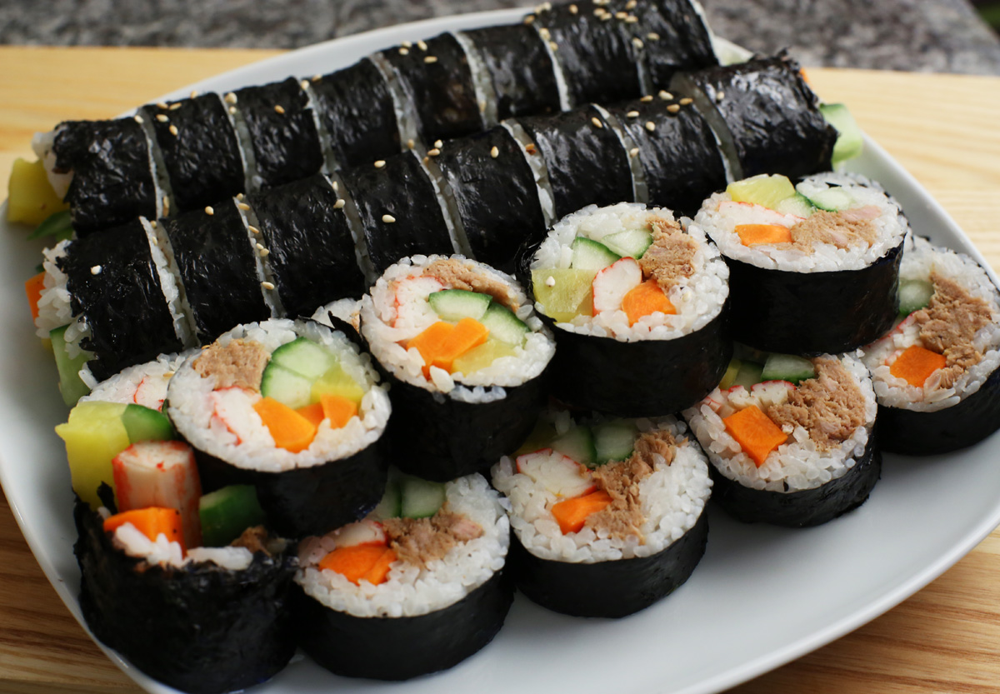

INGREDIENTS
3 cups Rice, white short grain 쌀
6 sheet Seaweed for Gimbap (Korean rice roll) 김밥김 (unseasoned)
5 oz Pickled Radish (Dan-mu-ji or Yellow Radish) 단무지
1 oz Kimchi 김치
2 oz Burdock Root (Woo Ung) 우엉
4 oz Carrot (large Korean carrot) 당근
4 oz Spinach 시금치
3 Egg 계란
3 oz Crab Meat (Imitation) 맛살
3 tbs Soy Sauce (regular) 왜간장
1 tbs Sugar 설탕
2⅔ tbs Sesame Oil 참기름
pinch Black Pepper 후추
1¼ tsp Garlic (minced) 다진 마늘
1 tbs Vinegar 식초
1 tsp Mul Yeot / Malt (Maltose) Syrup 물엿 (or Jo-cheong/Rice Syrup, can use sugar instead)
1½ tsp Sesame Seeds 깨
⅔ tsp Salt 소금
1 tsp Vegetable Oil 식용유
DIRECTIONS
1. Prepare rice
Wash 3 cups of short grain rice twice and drain all the water. Add water (3 cups for electronic rice cooker or 4 cups for regular pot) to the rice and add 2 (2”X2”) pieces of kelp in the water. After 30 minutes, remove kelp but leave rice and water. Kelp water apparently prevents rice from drying up and helps rice stick to the seaweed better. But, you can omit kelp if you don’t have any.
2. Cook rice
Cook rice. For detailed instructions, see how to cook rice in a rice cooker and how to cook rice in a pot .
3. Prepare burdock root
Peel and rinse 2.5 oz (70 g) of burdock root. Cut into thin strips
4. Soak burdock root
Soak the burdock root strips in 1 cup water and 1 tbs vinegar for 30 minutes.
5. Blanch burdock root
Boil 2 cups of water. Blanch the burdock roots in boiling water for 3 minutes.
6. Braise burdock root
In a sauce pan, mix ⅓ cup water, 3 tablespoons of soy sauce and 1 tablespoon of sugar and add burdock root in the pan. Cook uncovered on medium heat.
7. Braise II
When the liquid is almost gone, add 1 teaspoons of mulyeot (Korean malt syrup) or jocheong (rice syrup). If you don’t have mulyeot, just add a little more sugar or sugar substitute.
......

⇒To get more instructions. Please watch the guide video behind